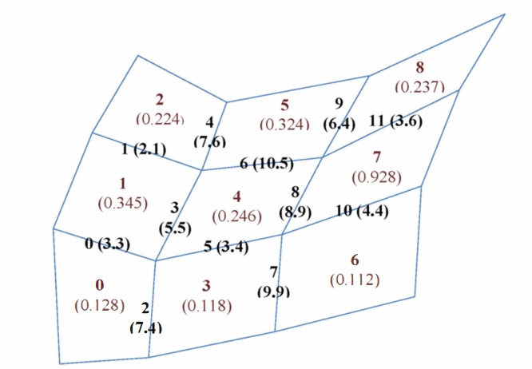
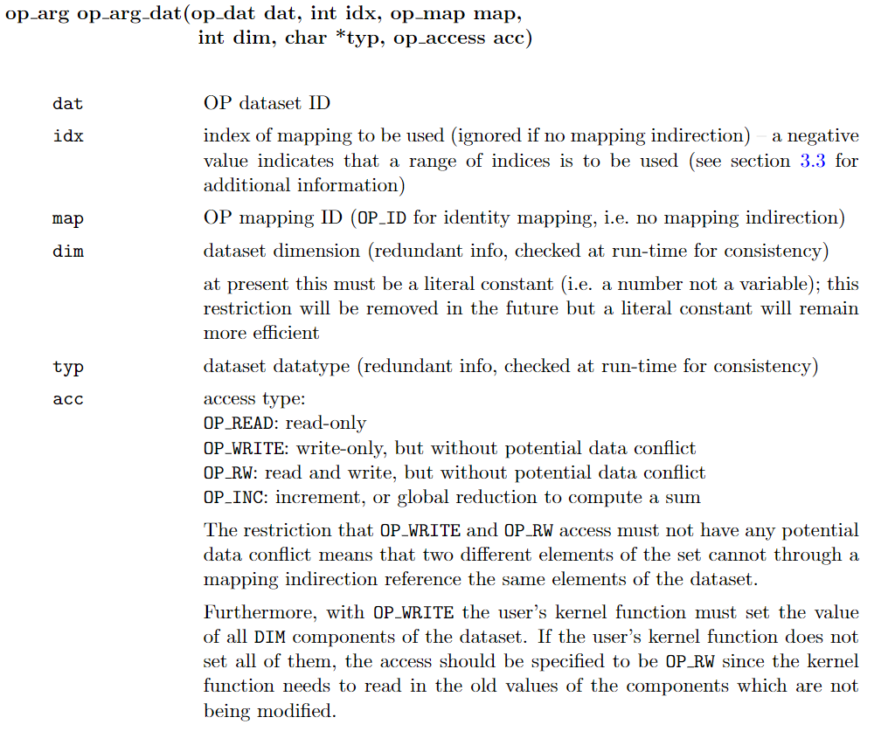
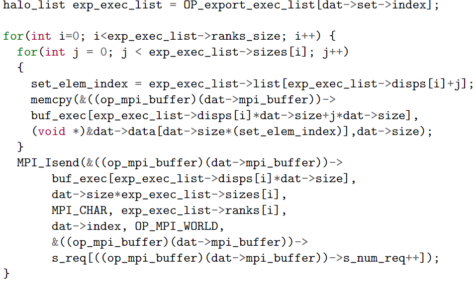
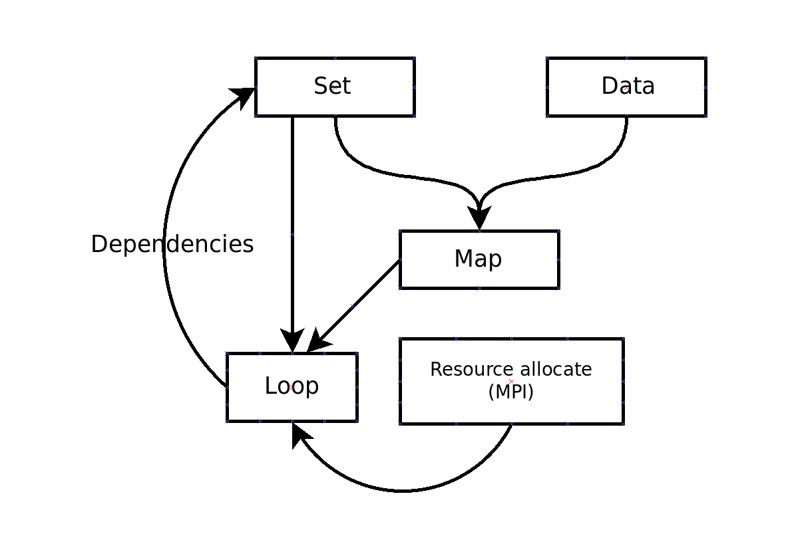

2110-OP DSL
https://op-dsl.github.io/papers.html
OP2 设计
OP2 API
对于非结构网格的联系往往需要用复杂的拓扑序列维护关系，但是不同的网格具有不同的性质，例如四边形网格，每一个网格只会有上下左右四个联系单元。
对于一般的拓扑关系，我们维护：
- sets
- data on sets
- connectivity between sets (mapping)
- operation over sets
用四边形网格为例，我们关心的集合有：
1 | |
数据维护
1 | |
连接性：
1 | |
操作 kernel function：
1 | |
核函数需额外的说明：

其中涉及了关于潜在数据依赖的处理，这一部分机制之后也会考虑。
并行策略
网格分区方案还是依赖了ParMetis
两个大的并行级别：
- distributed memory
- single-node/shared-memory
就是节点间并行和节点内并行。节点内并行的重要性高于节点间并行。因为节点之间并行其实只能通过MPI做Message Passing，我们更加 care 的是节点内的情况。设计遵循3条关键假设：
- each compute node will have GBs of memory
- memory bandwidth is a major limitation
- there is very little local shared memory
Cuda 策略
由于关键假设2，所以需要最小化主存和进程的通讯量。对于间接循环（涉及间接引用数据集的循环），这导致了使用小分区的想法，这些小分区足够小，以便每个小分区的所有间接数据集都能够适应有限的共享内存 在 NVIDIA GPU 中的每个 SM 上。对于数据冲突的问题，会有其他策略，这部分之后介绍。基于来自 FFTW 的想法，我们为每个并行循环构建了一个执行“计划”，该计划是该循环在 GPU 上的执行的自定义阻塞，从而优化使用每个多处理器上的本地共享内存，并详细考虑了循环计算。
MPI 策略
暴力全部拷贝同步。
计算策略和 Cuda 类似，也使用了类似于 FFTW 的 execution plan
Plan construction
这一部分在代码 c/core/op_lib_core 中有详细说明。
是并行循环在其上执行的抽象“元素”的集合。 “数据集”是与集合相关的数据，例如流变量或边权重，它们是并行循环函数的参数。 在特定的并行循环中，“间接数据集”是使用来自另一组的映射间接引用的数据集。 预处理器 op2.m 为每个并行循环识别参数 nargs 的数量、间接数据集 ninds 的数量以及从参数到间接数据集 inds[] 的映射。 最后一个对每个参数都有一个条目；如果它等于 -1，则该参数不引用间接数据集。
执行计划将执行集划分为小分区。 这些在代码中被称为“块”，因为它是一个较短的词。 与 CUDA 线程块相比，“块”一词的用法略有不同，但每个计划块都由单个 CUDA 块处理，因此希望不会太混乱。
计划块的大小使得间接数据集适合每个 SM 可用的有限共享内存量（“流式多处理器”，NVIDIA 用于描述其 GPU 中的每个执行单元的首选术语）。 这个想法是将间接数据集保存在共享内存中，以最大限度地重用数据并避免全局内存流量。 然而，这需要对用于引用这些数据集的映射重新编号。
算法执行步骤为：
- 通过简单地附加到列表来构建对数据集的所有引用的列表
- 对列表进行排序并消除重复项——然后定义从本地索引到全局索引的映射
- 使用一个大的工作数组来反转映射，给出从全局索引到局部索引的映射
- 创建使用新本地索引的映射表的新副本
请注意，每个间接数据集最终都有自己的重复映射表。
在这种情况下，我们目前通过复制重新编号的映射表会浪费内存和内存带宽。将来应该通过识别此类重复项、取消分配重复项并将指向重复表的指针更改为指向主表来消除这种情况。
为了避免数据依赖，这里使用染色策略。目标是为每个元素分配一个颜色，没有两个相同颜色的元素引用相同的间接数据集元素
对于每个间接数据集元素，我们维护一个引用它的元素的颜色列表。 从这个初始化为空的列表开始：
- 循环遍历 set 元素引用的所有间接数据集元素，以找到尚未引用它们的最低索引颜色
- 将此设置为元素的颜色
- 再次循环所有间接数据集，将此颜色添加到它们的列表中
核间策略

维护边界
